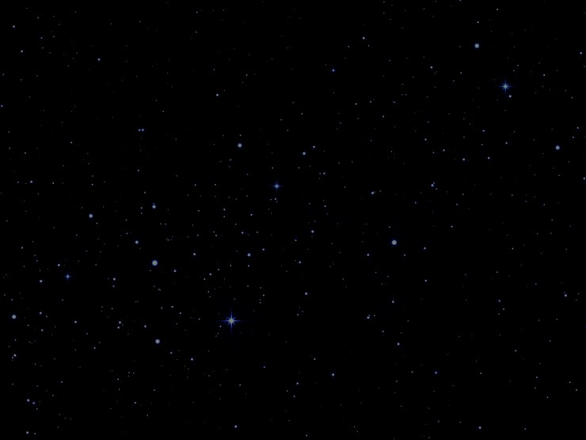
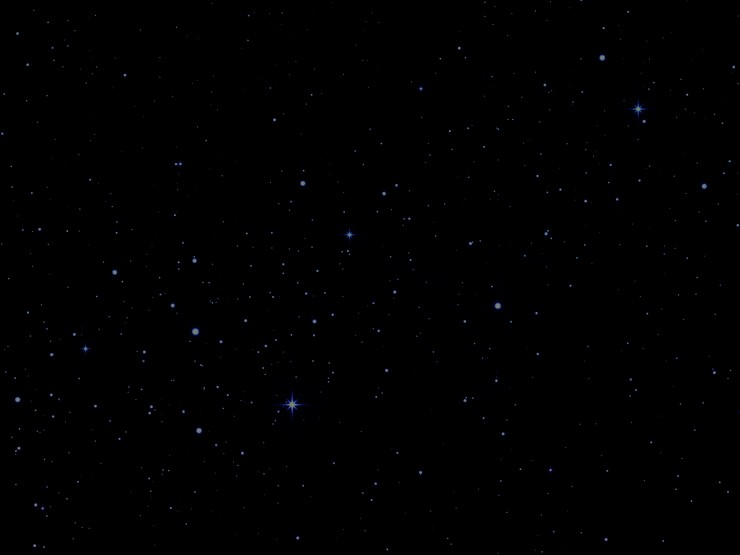
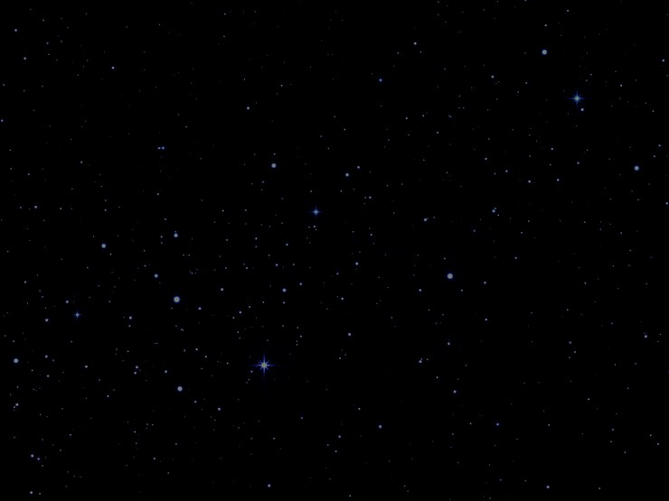
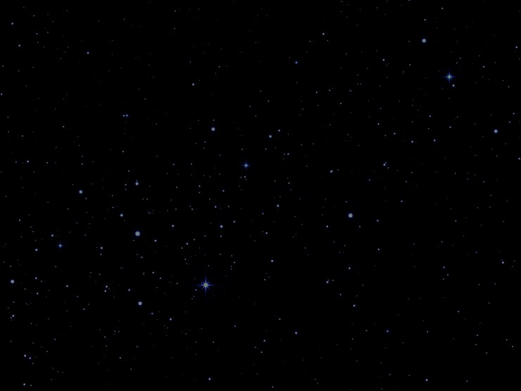
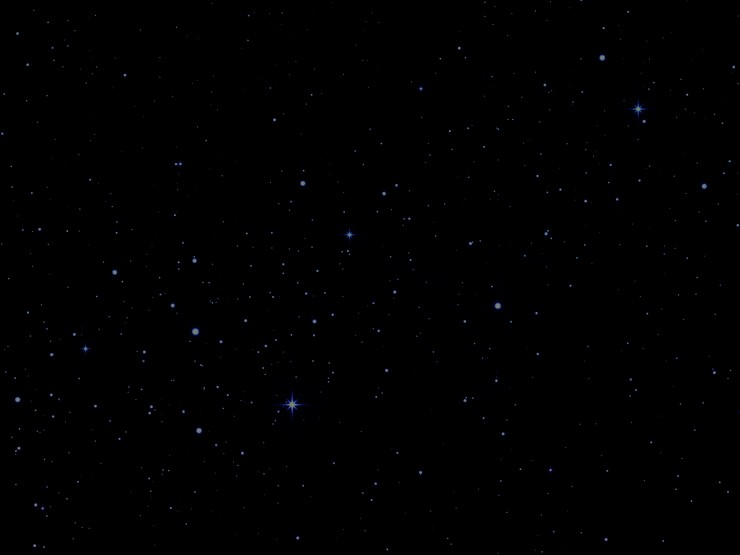

Initiation au js
🌑
Accueil
Les bases du langage HTML
Les tableaux
Les styles CSS : exercices
Les styles CSS : illustration
Javascript : exercices
Javascript : l'ampoule
Javascript : planètes

Mouse over the sun and the planets and see the different descriptions.
 


